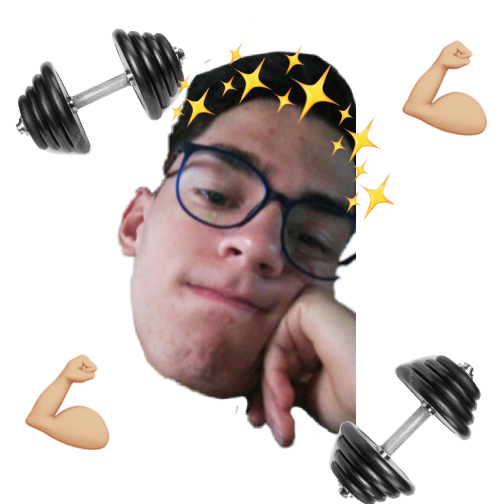
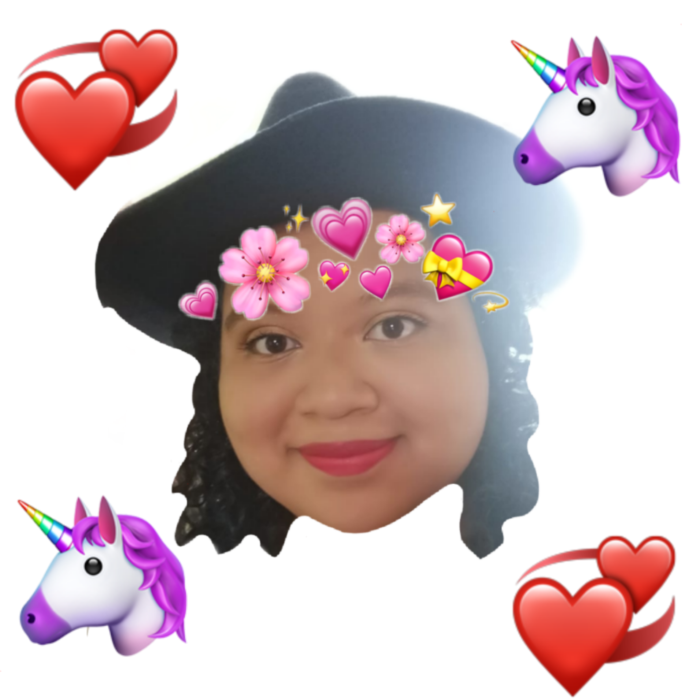
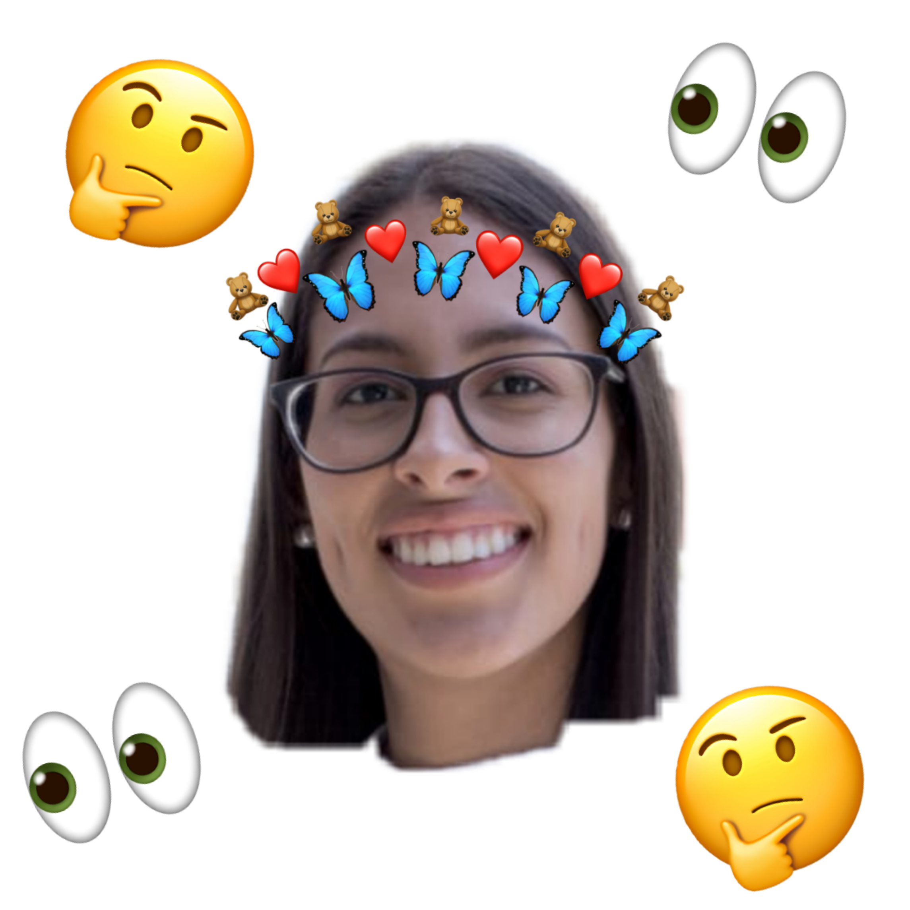

El es un amigo sumamente carismático, empático y le encanta ayudar a otras personas, además es muy proactivo y le fascina hacer ejercicio.
Ella es sumamente sensible y posee una inteligencia emocional muy grande, además tiene una niña interna que la hace muy soñadora.
El es muy divertido por lo que siempre es el alma de la fiesta, puede sacar chistes de lo mas aburrido y volverlo algo nuevo e interesante.
Ella posee una intuicion muy desarrollada y es la mejor escuchando y dando consejos, siempre esta ahi para apoyar y levantar los animos de todos.
